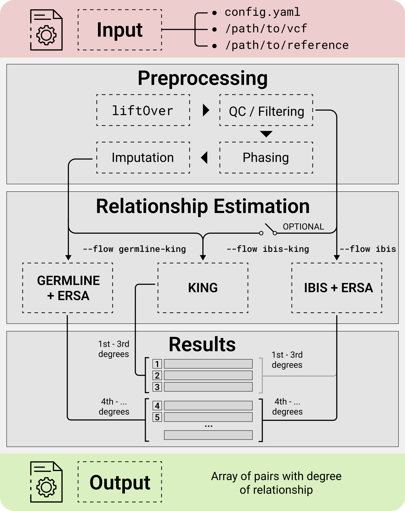

GRAPE Overview
Summary
GRAPE is a free open-source Genomic RelAtedness detection PipelinE.
It is fast, reliable and accurate for both close and distant degrees of kinship.
GRAPE incorporates comprehensive data preprocessing, quality control (QC), reference datasets management, and several workflows for relatedness inference.
The project uses software development best practices, as well as Global Alliance for Genomics and Health (GA4GH) standards and tools. The GRAPE efficiency, methods and accuracy is demonstrated on both simulated and real-world datasets in F1000 Research Journal.
Background
Classifying the degree of relatedness between pairs of individuals has both scientific and commercial applications. As an example, genome-wide association studies (GWAS) may suffer from high rates of false positive results due to unrecognized population structure. This problem becomes especially relevant with recent increases in large-cohort studies. Accurate relationship classification is also required for genetic linkage analysis to identify disease-associated loci. Additionally, DNA relatives matching service is one of the leading drivers for the direct-to-consumer genetic testing market.
Despite the availability of scientific and research information on the methods for determining kinship and the accessibility of relevant tools, the assembly of the pipeline, that stably operates on a real-world genotypic data, requires significant research and development resources. GRAPE is developed as an open-source project to address this isshue.
{kind=link}
License
GRAPE is free for both scientific and commercial purposes and licensed under GNU GPLv3.
Support
Please report any issues or ideas at: https://github.com/genxnetwork/grape/issues
Join our Telegram chat for the support.
Or contact the team at: info@genxt.network